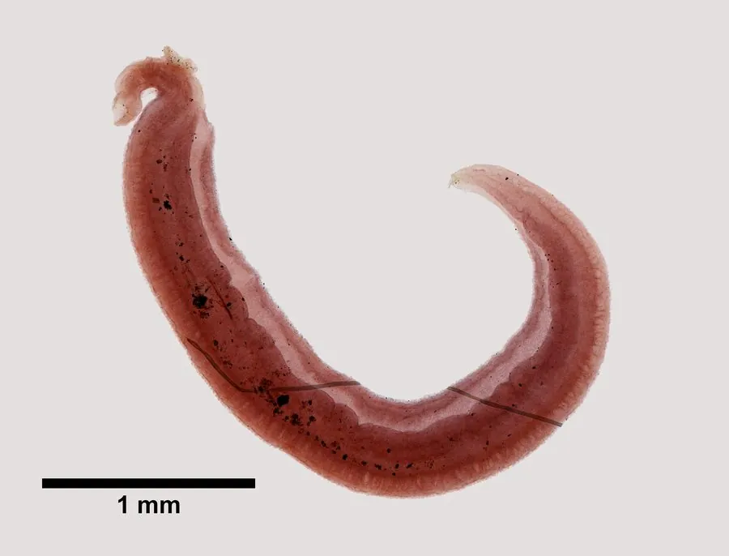

其他无脊椎动物 · 动物界
埃及血吸虫 Schistosoma haematobium

寄生于人体膀胱静脉的血吸虫，经水泡螺传播，尾蚴钻入皮肤感染，引起血尿与膀胱病变。
- 分类
- 门扁形动物门纲吸虫纲目复殖吸虫目科裂体科属裂体属
- 栖息环境
- 人体膀胱周围静脉丛内（成虫）；淡水与水泡螺体内（幼虫）
- 地理分布
- 非洲及中东地区
- 保护级别
- 病原寄生虫，无保护需求，属被忽视热带病防控对象
物种志
埃及血吸虫的成虫雌雄异体，雄虫长约十至十五毫米，雌虫细长，常卧于雄虫的抱雌沟中。它寄生于膀胱周围的静脉丛，虫卵排出时穿过膀胱壁，随尿液排出体外。虫卵呈椭圆形，末端有一根细长的刺，与曼氏血吸虫的侧刺明显不同，这是镜下鉴别的要点。
虫卵入水后孵出毛蚴，钻入水泡螺等中间宿主，发育成尾蚴后逸出。人涉水或沐浴时尾蚴钻入皮肤感染，童虫移行至膀胱静脉丛发育为成虫。虫卵在膀胱壁引起肉芽肿和纤维化，典型症状是血尿，长期感染可导致膀胱壁增厚甚至癌变。该病主要分布于非洲和中东，防护包括避免接触疫水、使用安全水源，流行区可用吡喹酮集体治疗。
形态与习性
- 成虫体长雄虫十至十五毫米，雌虫细长
- 寄生部位膀胱周围静脉丛
- 虫卵特征椭圆形，末端有一根细长的刺
- 中间宿主水泡螺等淡水螺
- 感染途径尾蚴钻入涉水或沐浴时的皮肤
- 典型症状血尿，长期感染可致膀胱病变
趣味知识
- 它把卵产在膀胱壁附近，卵穿过膀胱壁随尿排出，所以病人尿中带血。
- 它的卵末端长着一根细刺，和曼氏血吸虫的侧刺正好区分。
- 孩子在河边玩水就可能感染，非洲不少地区的防控重点就在这里。